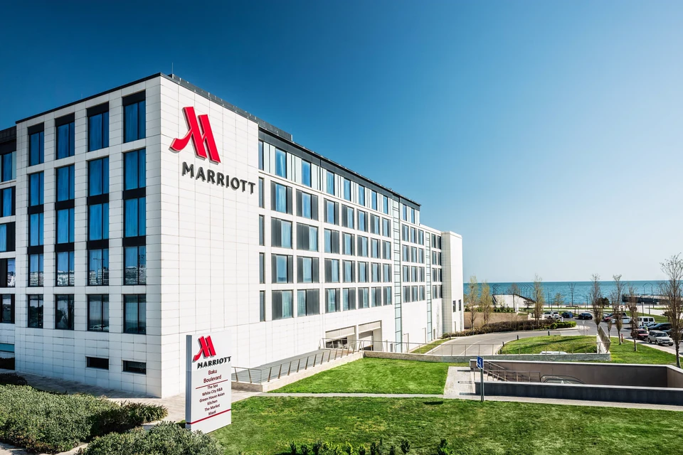
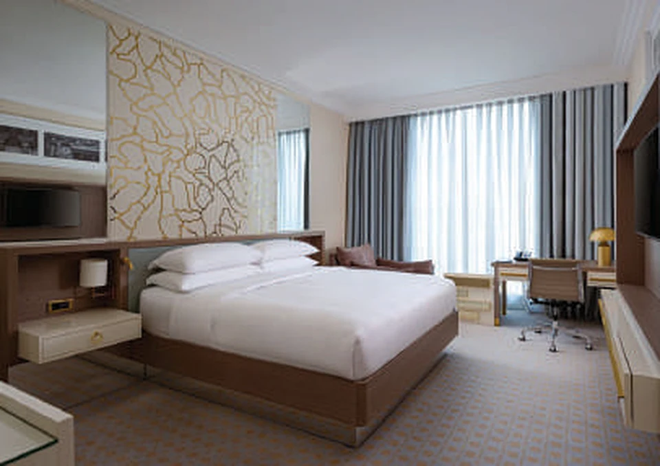
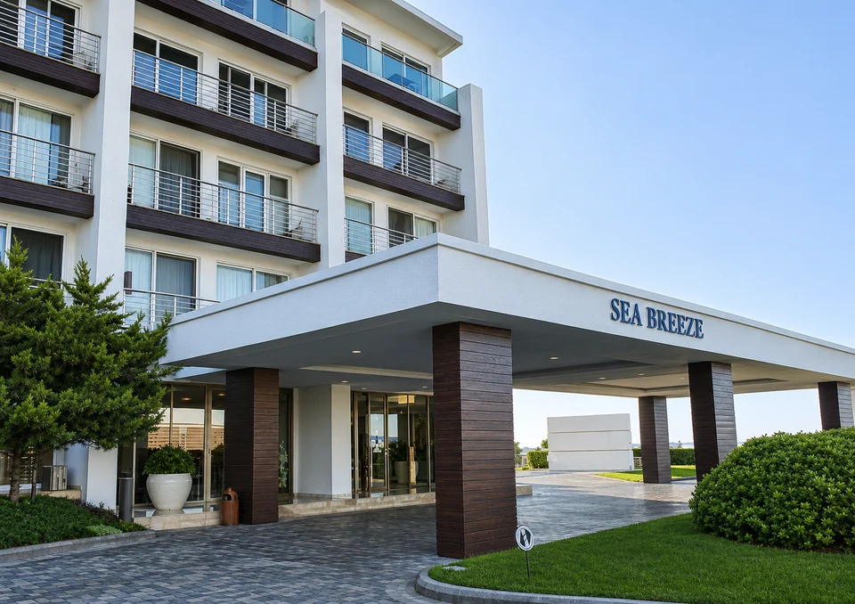
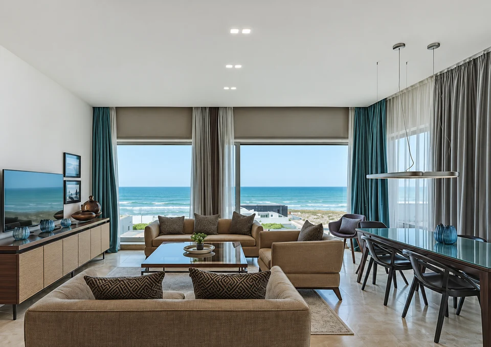

Sarvagelli Textile Concept
Sarvagelli tekstil konsepti · Bakı, Azərbaycan
Haqqımızda
1979-dan pərdə, jalüz və interyer tekstili hazırlayırıq.
Material seçimindən fərdi tikiliş və quraşdırmaya qədər, hər həlli məkanın istifadəsinə uyğun qururuq.
Sarvagelli haqqındaLayihələrimiz
Bütün layihələr




Konsept vizualları
İş istiqamətlərimiz


Perspektivlər
Bütün yazılar
Materialdan tətbiqə.
Ölçü, material seçimi, tikiliş və quraşdırma bizim üçün eyni işin mərhələləridir.
Komandamız